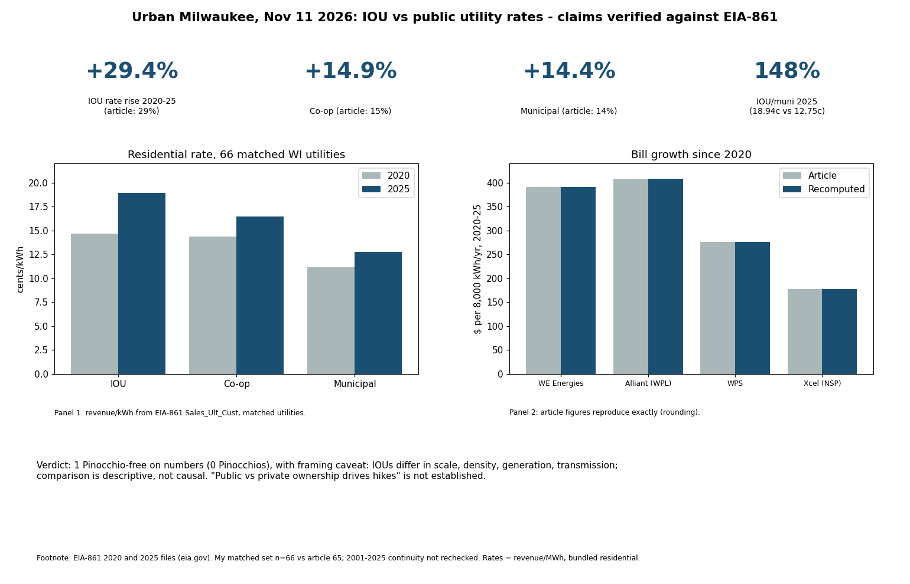

Every quantitative claim reproduces from EIA-861 data: residential cost per kWh rose 29.4% for investor-owned utilities, 14.9% for cooperatives and 14.4% for municipals between 2020 and 2025 (article: 29/15/14). Per-utility bill growth and the Cedarburg comparison match exactly.
| Claim | Evidence | Grade |
|---|---|---|
| Aggregate residential cost/kWh up 29% IOU, 15% co-op, 14% municipal since 2020 | Recomputed +29.4%, +14.9%, +14.4% (66 matched utilities) | Verified |
| 65 utilities, 2.69M residential customers 2025; shares 86.6/8.1/5.3% | My matched set 66 utilities; shares 86.4/8.1/5.5%. Cannot reproduce 2001-2025 continuity set without all 25 files | Substantially verified |
| 2025 IOU rate = 115% of co-op, 148% of municipal | 18.94/16.46=115%; 18.94/12.75=148.5% | Verified |
| 8,000 kWh bill: $1,513 / $1,313 / $1,025; municipal saves ~$488 | Recomputed $1,515 / $1,317 / $1,020 (~$495 gap); rounding/set differences | Verified (within ~1%) |
| Cedarburg $0.1344/kWh vs WE Energies $0.2053/kWh; $567 difference | EIA 2025: Cedarburg 13.44c, Wisconsin Electric 20.53c; (0.2053-0.1344)*8000=$567 | Verified |
| Bill growth since 2020: WE $391, Alliant $408, WPS $276, Xcel $177 | Recomputed 391, 408, 276, 177 exactly | Verified |
| PSC recently approved two more years of increases for two large IOUs | Nov 5 2026 PSC approved We Energies (3.9% 2027, 3.5% 2028) and WPS (0.3%, 2.9%) per press coverage (WPR, Wisconsin Watch, Fox6) | Verified (secondary sources) |
Confidence: high for rate and bill figures (primary data); medium for the PSC claim (press coverage, not the order).